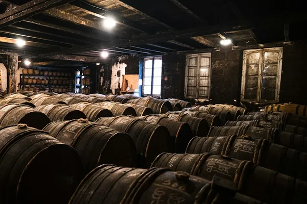

Cognac: Cognac

Photo: Timothé Durand on Unsplash
Brandy from the Charente region in western France, the world's most famous grape spirit.
How it's made
Double distilled in copper Charentais pot stills and aged in French oak. VS is at least 2 years old, VSOP at least 4 and XO at least 10.
Mainly Ugni Blanc grapes make a light, acidic wine that is distilled twice in copper Charentais pot stills, the first pass making the 'brouillis' and the second the 'bonne chauffe'. By law all distillation must finish by 31 March after the harvest.
History
Dutch traders in the 1600s distilled the thin local wine so it would survive shipping, and found it improved in oak. Houses such as Martell (1715), Rémy Martin (1724) and Hennessy (1765) built the trade.
Ageing and label terms
Cognac ages in French oak, usually from Limousin or Tronçais. VS means at least 2 years, VSOP at least 4 and XO at least 10 years for the youngest brandy in the blend.
Styles
Light and fruity young blends for mixing, rounder VSOPs, and rich, nutty, complex XOs. The best crus are Grande Champagne and Petite Champagne; a blend of these two with at least half Grande Champagne is called Fine Champagne.
Rules and protected names
Cognac is a protected AOC. There are six growing areas: Grande Champagne, Petite Champagne, Borderies, Fins Bois, Bons Bois and Bois Ordinaires. Minimum strength is 40% ABV.
How to serve and classic cocktails
Sip older cognacs neat in a tulip glass; VS works with ginger ale or tonic. Classic cocktails: Sidecar, French 75 (the original recipe) and Vieux Carré.
With food
VSOP and XO go well with aged Comté, roasted nuts, foie gras and dark chocolate desserts.
Good to know
Here 'Champagne' refers to the chalky soils of the Cognac area and has nothing to do with sparkling wine. Most growers sell their eaux-de-vie to the big houses for blending.
Producers
- Hennessy
- Rémy Martin
- Martell
- Courvoisier
- Pierre Ferrand
Bottles to try
Rémy Martin VSOP
Ripe apricot, vanilla, liquorice and flowers.
Serve: Neat or in a Sidecar
Hennessy VS
Fresh and fruity: grape, toasted almond, vanilla and oak.
Strength: 40% · Age and cask: At least 2 years in French oak (VS)
Hennessy was founded in 1765 by Richard Hennessy, an Irish officer who settled in Cognac, and is the largest cognac house. VS is a blend of many young eaux-de-vie, made for mixing.
Serve: With ginger ale, or in a Sidecar
Martell VSOP Aged in Red Barrels
Smooth and fruity: apricot, plum, vanilla and gentle spice.
Strength: 40% · Age and cask: At least 4 years in French oak (VSOP)
Martell, founded in 1715 by Jean Martell from Jersey, is the oldest of the big cognac houses. Its house style is light and fruity, helped by distilling clear wines without the lees.
Serve: Neat or on ice
Courvoisier VSOP
Dried apricot, vanilla, toasted almond and soft spice.
Strength: 40% · Age and cask: At least 4 years in French oak
The Courvoisier house is based in Jarnac on the Charente river and has long linked its name to Napoleon, using his silhouette on its bottles. A smooth, rounded VSOP for sipping or mixing.
Serve: Neat, on ice, or in a Sidecar
Martell Cordon Bleu
Rich and silky: violet, dried apricot, gingerbread, toasted nuts and sweet spice.
Strength: 40% · Age and cask: XO-grade blend, French oak
Created by Édouard Martell in 1912 and still one of the best-known older cognacs. It uses a large share of eaux-de-vie from the Borderies, the smallest cognac cru, which gives its floral, nutty character.
Serve: Neat, at room temperature
Pierre Ferrand 1840 Original Formula
Bold and fruity: apricot, orange, vanilla and a spicy, punchy finish.
Strength: 45% · Age and cask: Young blend, French oak casks
Built to recreate the bolder, higher-strength cognac that 19th-century bartenders used, after research with cocktail historian David Wondrich. It is made to stand up in mixed drinks.
Serve: In a Sidecar, a Cognac Old Fashioned or a punch
Hennessy XO
Deep and rich: dried fig, dark chocolate, candied fruit, pepper and spicy oak.
Strength: 40% · Age and cask: XO: blend of eaux-de-vie aged at least 10 years in French oak
Hennessy XO was first blended in 1870 for the family's friends, and is often named as the first cognac sold under the XO label. It is a blend of many eaux-de-vie from the four best crus.
Serve: Neat in a tulip glass, or with a single ice cube
Rémy Martin XO
Ripe plum, candied orange, jasmine, cinnamon and a long, smooth finish.
Strength: 40% · Age and cask: XO: blend of eaux-de-vie aged at least 10 years in Limousin oak
A Fine Champagne cognac, meaning its grapes come only from Grande and Petite Champagne, with at least half from Grande Champagne. Rémy Martin distils on the lees, which adds richness.
Serve: Neat in a tulip glass after dinner
Also a wine region: Bordeaux wine guide.
More brandy regions
Explore all spirits in the interactive guide
The Wine Reference newsletter
New wines, stories and career guides, one email a week at most.
Over 18s only. Unsubscribe any time with one click. Your email is stored securely by Kit and never shared.
Support The Wine Reference
This guide is free, with no paywall. If it helped you choose a bottle, you can buy me a glass and keep it growing.
🍷 Buy me a glass